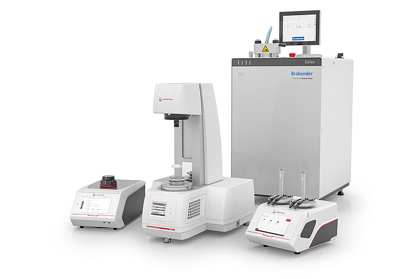

无人机智能巡检与应急处置系统
面向园区、矿山、厂区和应急管理场景，建设具备高精度定位、长航时飞行、实时高清图传、 夜间照明、远程喊话和物资抛投能力的无人机作业系统，提升巡检效率和现场处置能力。
案例内容已按对外展示口径整理，重点呈现飞行平台、通信图传、多传感感知、任务负载和电池保障能力。

项目概述
以空中机动平台补充地面巡检盲区，形成“快速到达、实时回传、现场处置”的能力闭环。
建设背景
传统人工巡检受地形、夜间视野、距离和安全风险限制，面对突发事件时需要更快的现场感知与处置手段。
系统定位
无人机系统作为移动感知与应急处置单元，承担巡查、取证、搜索、照明、喊话和轻量物资投送等任务。
建设目标
通过高可靠飞行平台、多链路通信、智能航线与多负载能力，提升巡检覆盖效率和应急响应速度。
建设范围
围绕飞行平台、遥控通信和任务负载三类核心能力进行配置。
飞行平台
- 工业级机身与多旋翼飞行能力
- 高海拔、低温、高温和抗风作业适应性
- RTK 高精度定位与多卫星系统支持
- 视觉、红外和雷达感知增强飞行安全
遥控与图传
- 带屏遥控器支撑现场一体化操作
- 高清实时图传与远程直播能力
- 双频通信和 4G 增强链路提升可靠性
- 双控模式支持飞行与云台协同作业
任务负载
- 探照灯支持远距离照明和爆闪提醒
- 喊话器支持实时喊话、录音和文本播报
- 抛投装置支持应急物资投送
- 多云台挂载满足复合任务需要
关键技术
围绕复杂环境下“飞得稳、看得清、传得回、处置快”组织能力。
精准定位与智能航线
支持多卫星定位、RTK 高精度悬停、航点飞行、建图航拍、倾斜摄影和航带飞行，适合固定线路巡检和三维建模任务。
感知避障与夜间飞行
通过视觉、红外、FPV 星光相机和可选毫米波雷达提升障碍物感知能力，在夜间和复杂环境中增强飞行安全。
数据安全与健康管理
支持媒体加密、设备健康管理、日志记录、异常诊断和电池状态监测，便于运维人员进行安全管理和故障追溯。
典型应用场景
覆盖日常巡检、夜间搜索、应急广播和现场支援等任务。
智能巡检与取证
- 厂区、矿区、管线和边界巡查
- 高清图传辅助远程研判
- 自定义水印与影像留痕支撑事件追溯
- 全景拍照与超清矩阵拍摄记录重点区域
应急处置与现场支援
- 夜间探照与重点区域照明
- 远距离喊话、文本播报和循环播放
- 轻量救援物资或工具抛投
- 双控协同完成飞行与任务载荷操作
项目价值
把巡检从“人到现场”升级为“空中快速抵达 + 远程实时研判”。
扩展方向
结合平台化调度和 AI 分析，可进一步扩展为无人化巡检体系。
自动巡检航线
围绕固定点位、边界线路和重点设施规划标准航线，实现周期性巡检、异常记录和巡检报告输出。
AI 识别分析
接入人员、车辆、烟火、设备异常等识别能力，辅助值守人员从海量视频中快速发现风险。
指挥平台联动
与视频平台、应急平台、工单系统和大屏联动，实现任务派发、过程回传、处置闭环和数据归档。